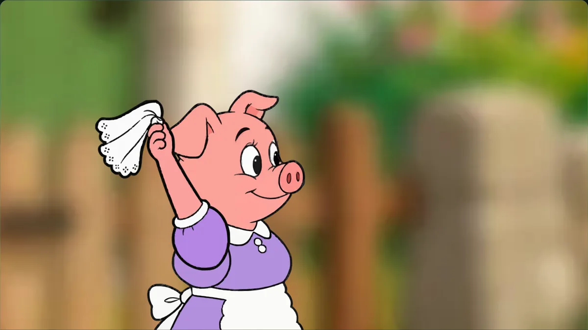
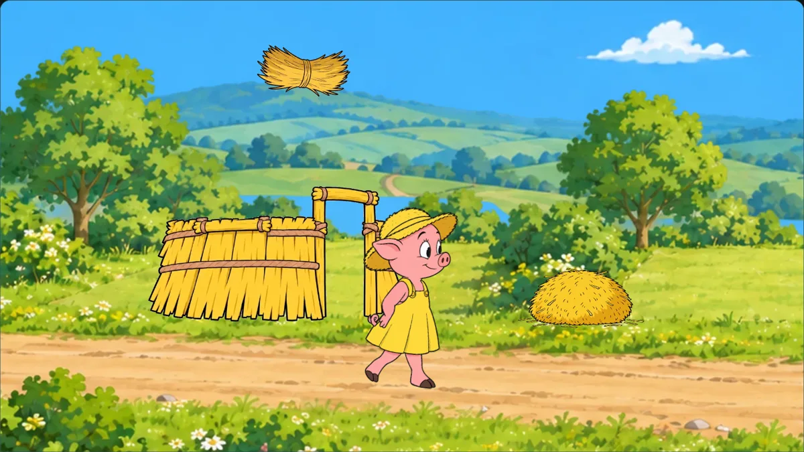
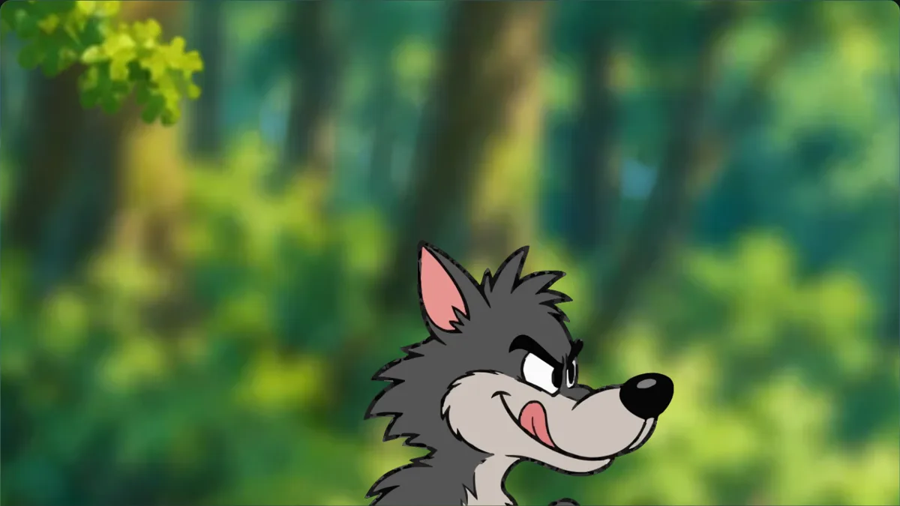
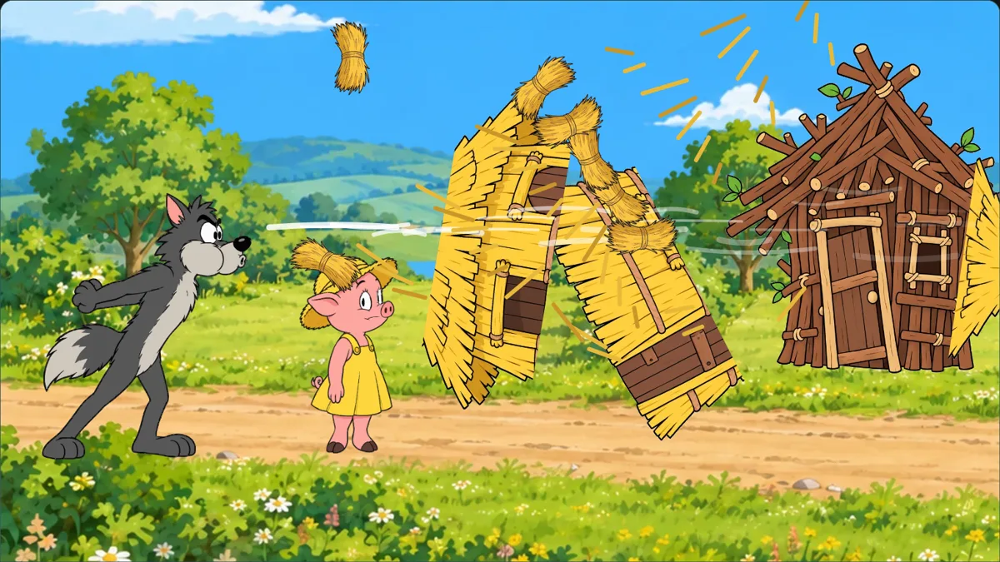
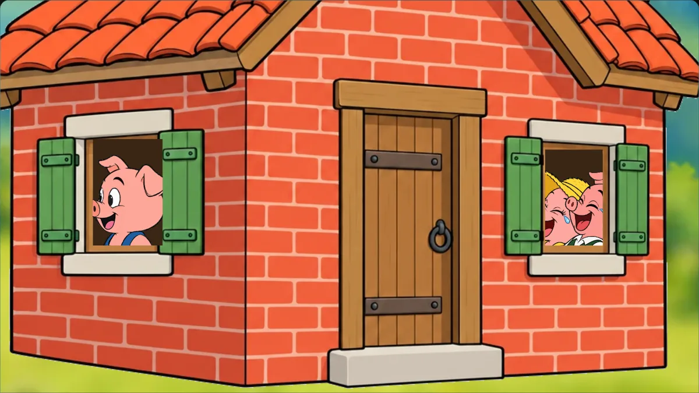
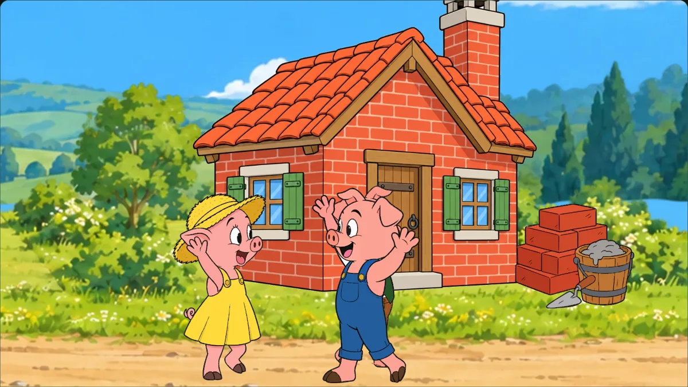
What we set out to do
Take a story with no book and no pictures, and make it an animated film you can pause, scrub and read along with, built like the rest of the shelf. What was new: the art came from an image model (OpenAI's gpt-image through OpenRouter), and the goal was a TV cartoon, not a slideshow.
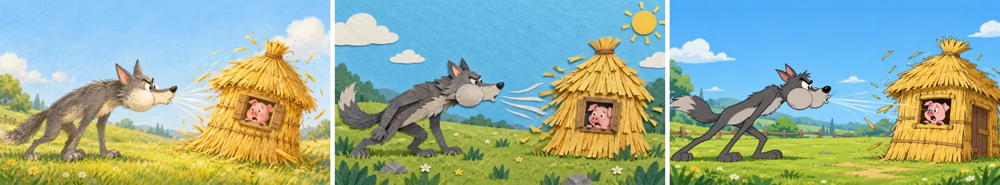
Four tries at a character
- Rotating painted parts. Too stiff, with seams at every knee.
- Painted body, code-drawn limbs. Much livelier, but one fixed camera still felt like a slideshow.
- Separately painted parts. They never lined up: arms came out beside the sleeve, hands went missing.
- Characters drawn entirely in code. Far too crude next to the painted world.
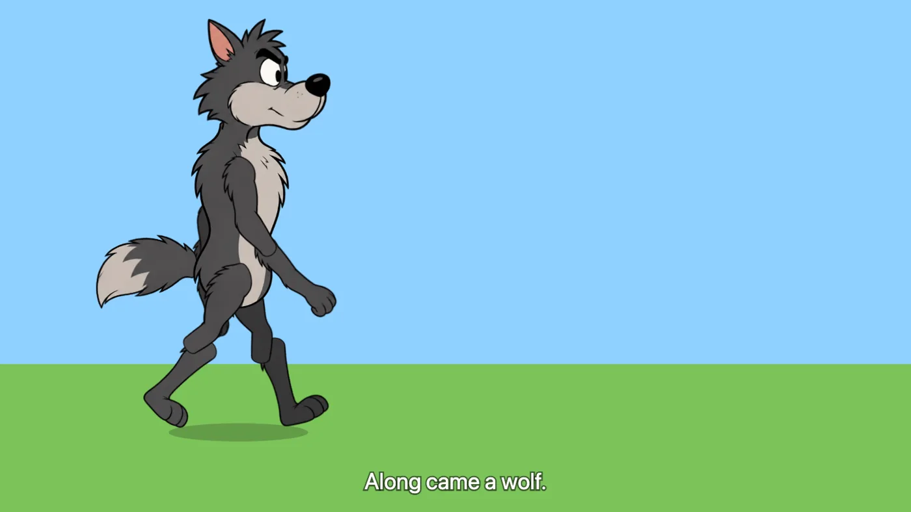
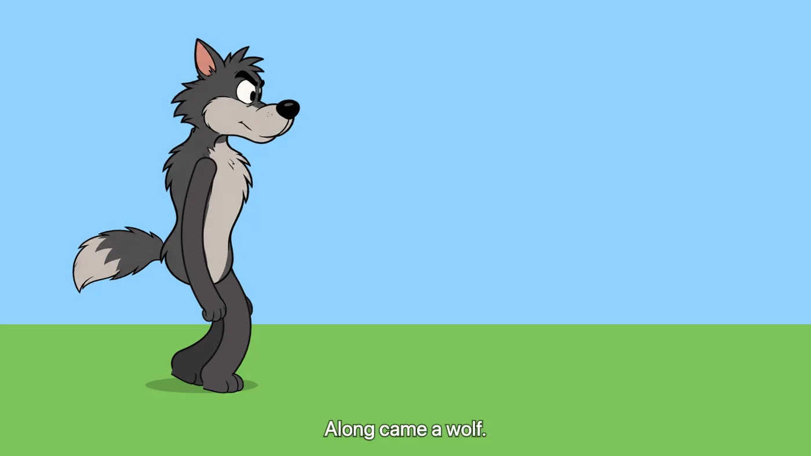
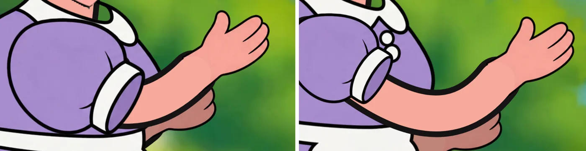
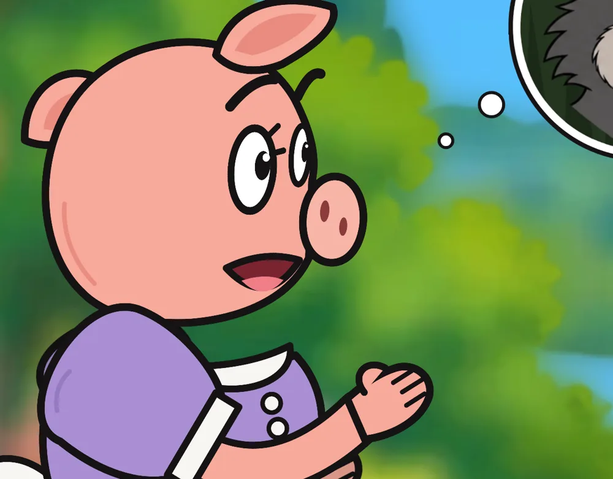
What finally worked
One picture, edited, never redrawn
Each character got one large picture, and every other version was an edit of it: without the near arm, without a face, with the legs in each walking pose. The edits change only a few percent of the pixels, so they line up exactly, and a script can cut parts out wherever two pictures differ.
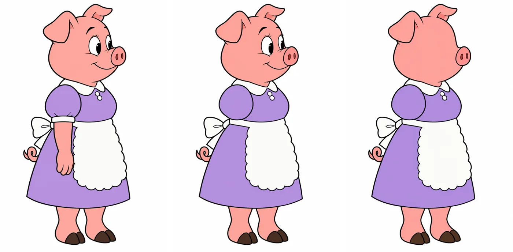
Vectorized, then swapped like a TV cartoon
The cut parts were traced into vector shapes, so close-ups stay sharp. Movement comes from swapping drawings the way TV cartoons do: legs walk on four drawings, and big actions, like sleeping or running, are whole drawings of their own. Code adds body bounce, blinks and the camera.
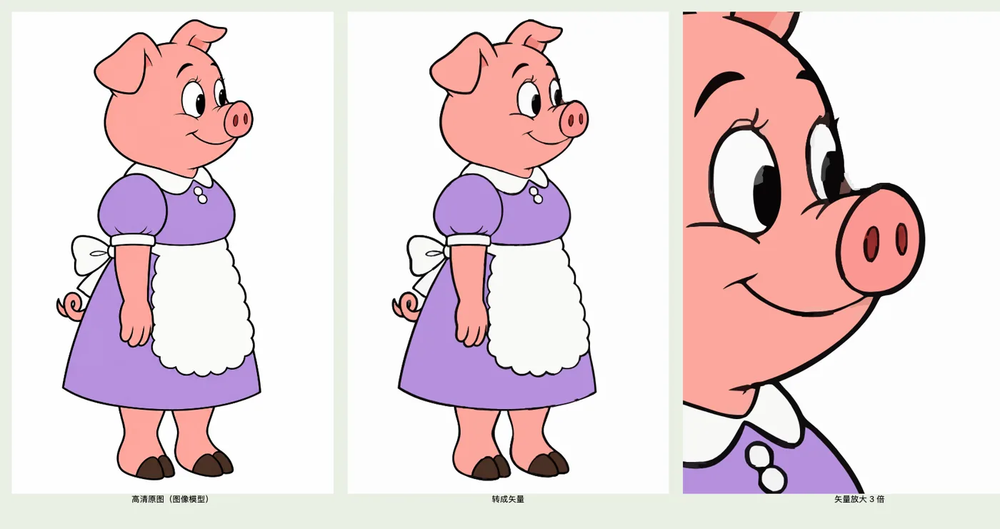
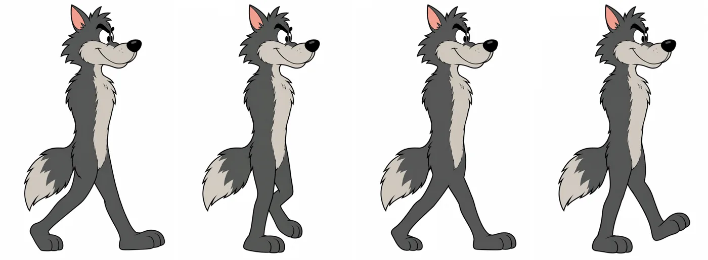
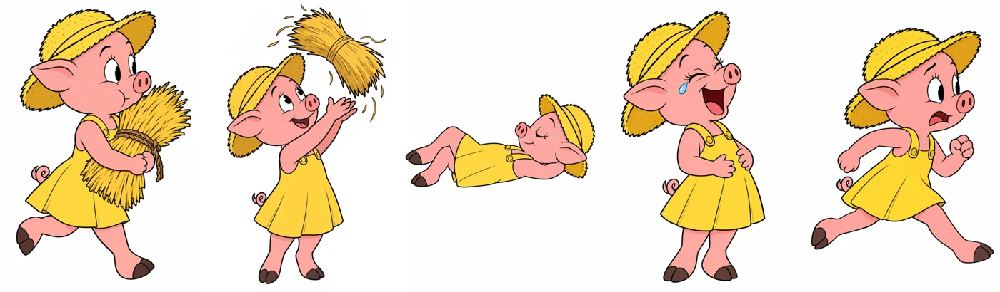
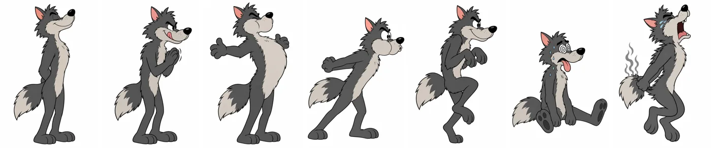
Faces that talk
Each face has a featureless "faceplate" laid over it, with moving eyes, lids and brows on top. Painted mouth shapes are timed to the words of the voice track.
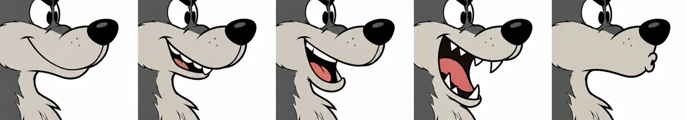
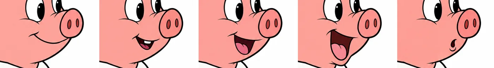
Places, houses and the camera
Backgrounds were painted, then separated into layers that slide past each other as the camera moves. The houses come in three aligned stages, so building them is a series of thumps, not a wipe. The camera cuts on words: a close-up for whoever speaks, a follow shot when someone runs.
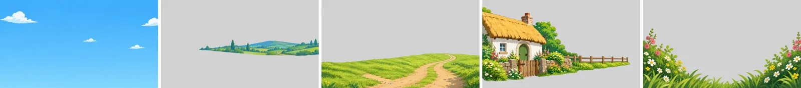
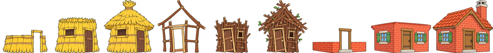
The voices are free text-to-speech, one per character. The music, four pieces generated with Google's Lyria, crossfades between parts of the story.
What kept going wrong
Almost every fix came from watching, and many were specific to one character.
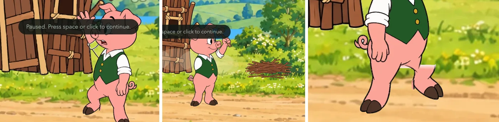
- The second pig wore no trousers, and the image model's safety filter kept refusing his pictures. Another model redrew each one slightly differently, so his body flickered. In the end he got shorts and was redrawn from scratch.
- A held object belongs to one drawing: the third pig carried the pot while still holding a brick.
- Quality "high" cost five times "medium" and, once traced, looked the same. We found out late.
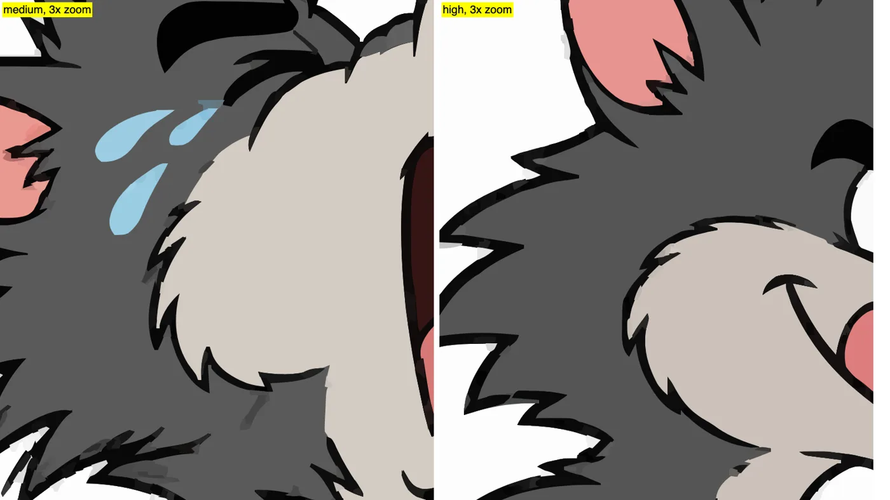
The numbers
Why we don't recommend it
Every new action needs new drawings. In a book drawn in code, a new movement is a few lines. Here, picking up a pot or climbing a ladder means another round of edits per character. The film can only do what was drawn, and you notice the gaps.
Consistency has to be fought for, character by character. A safety filter or a second model could break a character halfway through.
It doesn't get cheaper with practice. A Skill should make the hundredth chapter as good as the first. This method makes each one cost about the same, in money and attention.
So the film stays here as a record of a path we wouldn't recommend as it stands. What we kept: an image model is very good at painting a world that stays still, and Joke Collection uses it for exactly that. What would change our mind: image models that hand back a character as a real, bendable rig, or video models that keep a character consistent and can be steered word by word.